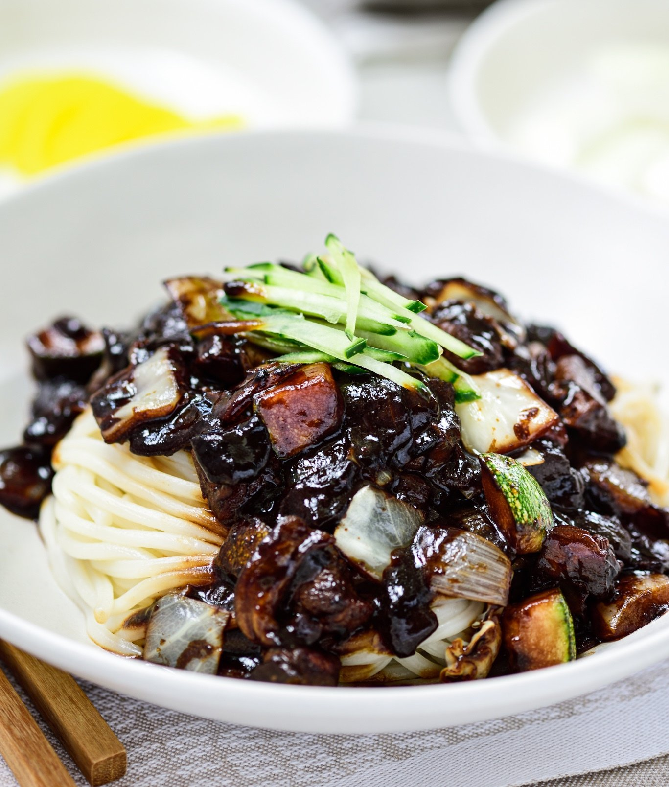

Jajangmyeon (Noodles in Black Bean Sauce)

A Korean noodle dish topped with a thick sauce made of chunjang, diced pork, and vegetables. Variants of the dish use seafood, or other meats.
As you might have seen on Korean dramas, it’s also the most popular dish for home delivery in Korea, just like pizza delivery in America. It’s the dish Koreans call to order on a hectic moving day.
Ingredients for sauce
- Five tablespoons Chunjang (춘장), Korean black bean paste
- Two tablespoons cooking oil
- One tablespoon of sugar
- One cup chicken stock or water
- One tablespoon potato or corn starch
Ingredients for meat
- 8 to 10 ounces pork (preferably with some visible fat, pork shoulder cut, Boston butt, etc.)
- 1 teaspoon grated ginger
- 1 tablespoon rice wine (or mirin)
- 1 teaspoon each of salt and pepper
- 2 tablespoons cooking oil
- 1 tablespoon soy sauce
Vegetables
- 1 extra large onion
- 8 ounces green cabbage
i8 ounces zucchini
- 1 small cucumber for garnish - optional
instructions
- Have a pot of water ready to cook the noodles. Turn the heat on when you start cooking the meat. This way you will have the boiling water ready, for cooking the noodles, by the time the sauce is done.
- Prepare the pork and vegetables by cutting them into 1/2 - 3/4 inch cubes. Marinate the pork with a tablespoon of rice wine (or mirin), ginger, salt and pepper while preparing the vegetables.
- Add the black bean paste to a small saucepan with the oil, sugar.Fry it over medium heat for 2 - 3 minutes, stirring constantly.
- Heat a large pan with 2 tablespoons of cooking oil over medium high heat. Add the pork and stir fry until no longer pink, adding a tablespoon of soy sauce half way through.
- Add the onion and cook until soft, stirring occasionally.
- Add the cabbage and zucchini and continue to stir fry until vegetables are softened.
- Stir in the black bean paste and mix everything together until all the meat and vegetables are coated well with the paste.
- Mix everything together until all the meat and vegetables are coated well with the paste. If you like ganjjajang, you can stop here and skip the next two steps. See note.
- Pour in the stock (or water) and bring it to a boil. Cook for 3 to 4 minutes.
- Stir in the starch slurry and cook briefly until the sauce is thickened. Add more sugar to taste.
- Add the noodles in the boiling water. Cook according to the package instructions and drain. Do not overcook. The noodles should have a firm bite to them (al dente). Place a serving size of noodles in each bowl. Spoon the sauce over the noodles and garnish with the optional cucumber matchsticks. Alternatively, you can serve over cooked rice.